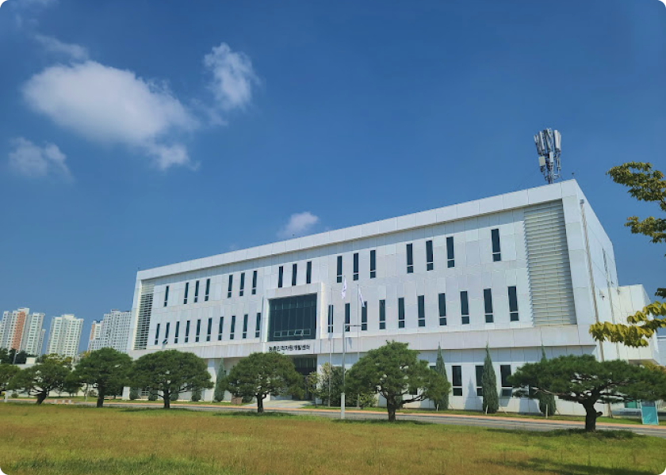
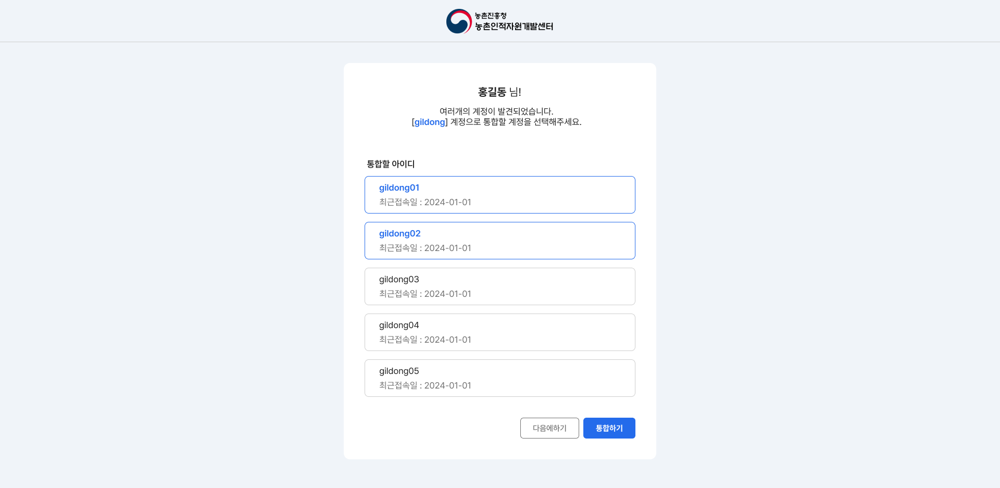
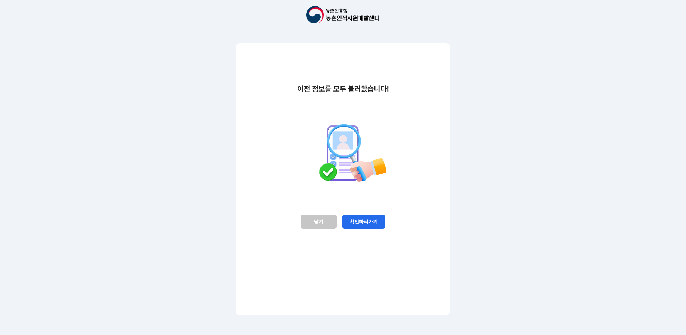

메인 화면 리디자인
기존 텍스트 중심 구조를 개선하여 카드형 UI로 재구성하고 주요 기능을 한눈에 파악할 수 있도록 설계했습니다.

농촌인적자원개발센터 웹사이트를 사용자 중심으로 재구성한 프로젝트입니다. 복잡하게 흩어진 정보를 정리하고, 누구나 쉽게 탐색할 수 있는 구조로 개선했습니다.
메뉴 구조가 복잡하여 원하는 정보를 빠르게 찾기 어려움
유사한 정보가 여러 페이지에 나뉘어 있어 탐색 효율이 떨어짐
예약, 조회 등 주요 기능이 분리되어 있어 이용 과정이 번거로움
사용자 흐름 중심으로 구조 재정의
정보를 시각적으로 구분
자주 사용하는 기능을 전면 배치
기존 텍스트 중심 구조를 개선하여 카드형 UI로 재구성하고 주요 기능을 한눈에 파악할 수 있도록 설계했습니다.

기존에는 예약, 조회, 수정 기능이 각각 분리되어 있어 사용자가 여러 페이지를 이동해야 하는 불편함이 있었습니다.
이를 해결하기 위해 예약 → 조회 → 수정까지 하나로 통합했습니다.



